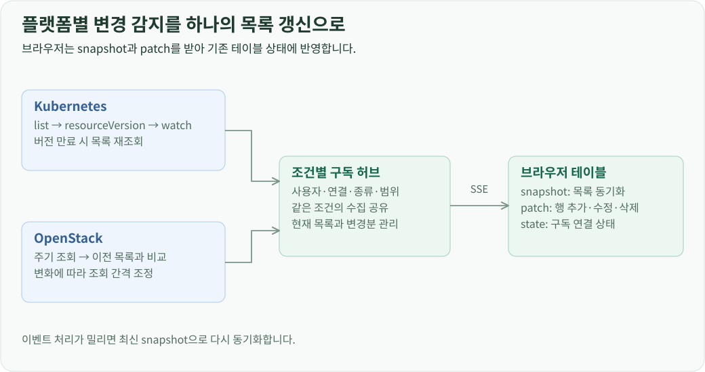

프로젝트 소개 · CloudLens 개발 · 전체 문서
개요
Kubernetes와 OpenStack의 응답을 공통 목록 형식으로 변환하고, 브라우저는 같은 테이블과 상세 화면으로 표시합니다. 자원 종류를 발견하는 방식과 조회·갱신 방식은 플랫폼별 어댑터가 담당합니다.
자원 종류에서 목록까지
Kubernetes는 API discovery에서 API 그룹, 버전, 자원 이름, Kind, Namespace 여부와 지원 동작을 읽습니다. 이 정보로 기본 자원과 클러스터에 설치된 CRD의 탐색 메뉴를 구성합니다. OpenStack은 인증 후 받은 서비스 카탈로그와 SDK의 자원 정의를 연결해 조회할 자원 종류를 구성합니다.
사용자가 자원 종류를 선택하면 프론트엔드는 연결 프로필, 자원 ID, 버전, Namespace, 조회 범위와 페이지 조건을 목록 API에 보냅니다. 백엔드는 프로필 소유자를 확인하고 해당 플랫폼의 어댑터를 호출합니다.

목록 응답에는 열 정의, 행 데이터, 자원 식별자와 페이지 정보가 들어갑니다. Kubernetes의 Table 응답은 API가 제공한 열을 사용하므로 CRD에 정의된 추가 출력 열도 표시할 수 있습니다. OpenStack 응답은 자원별 표시 규칙으로 상태, 주소, 용량, 참조 자원 등을 열에 배치합니다.
각 행에는 화면에 보일 값과 실제 자원의 식별자를 함께 넣습니다. 테이블은 표시 값으로 셀을 그리고, 행 선택·상세 조회·변경 요청에는 식별자를 사용합니다. 페이지 정보와 조회 시각도 같은 응답으로 받으므로 자원마다 별도의 목록 화면을 만들지 않고 공통 테이블을 사용할 수 있습니다.
조회 범위와 페이지 상태
Kubernetes의 Namespace 자원은 선택한 Namespace 또는 전체 Namespace에서 조회합니다. 클러스터 범위 자원은 Namespace 조건 없이 조회합니다. 버전 선택은 같은 종류의 자원에 사용할 API 버전을 정합니다.
OpenStack에서는 연결 계정의 프로젝트 범위와 전체 프로젝트 조회 조건을 서비스별 API 인자로 변환합니다. 같은 화면의 범위 선택을 Nova·Cinder·Neutron 등 각 서비스가 받는 형태로 바꾸는 책임은 어댑터에 둡니다.

검색창은 불러온 행에 문자열 조건을 적용합니다. 서버 조회 조건, 화면의 검색어, 현재 페이지는 별도 상태로 관리합니다. 자원 종류나 Namespace가 바뀌면 기존 페이지와 선택 대상을 초기화하고 새 범위의 목록을 요청합니다.
생성·수정·삭제와 행별 작업은 자원의 지원 동작을 조회해 구성합니다. Kubernetes는 discovery의 verbs와 권한 확인을 사용하고, OpenStack은 자원별 작업 정의와 현재 상태를 사용합니다. 일괄 메뉴는 선택한 대상에 적용할 수 있는 공통 작업을 표시합니다.
실시간 목록을 유지하는 구독 구조
최초 조회로 목록을 만들고, 이후에는 서버가 변경분을 SSE로 전달합니다. 서버의 구독 단위는 사용자·프로필·자원 종류·버전·Namespace·조회 조건입니다. 같은 조건의 브라우저 구독은 하나의 수집 작업을 공유합니다.

Kubernetes에서는 목록의 resourceVersion을 기준으로 watch를 시작합니다. 서버는 자원 ID와 Namespace로 행을 식별해 추가·변경·삭제를 반영합니다. watch 버전이 만료되어 410 응답을 받으면 목록을 다시 읽고 새 버전에서 구독을 이어갑니다. watch를 사용할 수 없는 경로는 주기 조회로 전환합니다.
OpenStack은 목록을 주기적으로 조회해 이전 결과와 비교합니다. 변화가 있거나 작업 후 갱신 신호를 받으면 조회 간격을 줄이고, 변화가 없으면 정해진 상한까지 간격을 늘립니다. 비교 결과에서 바뀐 행과 삭제된 행을 SSE 패치로 만듭니다.
최초 연결과 재동기화에는 snapshot을 사용하고, 연결이 유지되는 동안에는 patch를 사용합니다. 클라이언트가 처리할 이벤트가 밀리면 최신 snapshot으로 기준을 다시 맞춥니다. 화면은 이 데이터를 기존 행에 반영하므로 전체 페이지를 다시 열지 않고도 자원 상태를 확인할 수 있습니다.
상세 화면과 관계 탐색
자원을 클릭하면 목록 행에 포함된 프로필·종류·Namespace·이름으로 상세 API를 호출합니다. 상세 응답의 UID는 이후 로그, 터미널, 변경 요청에서도 같은 대상을 식별하는 데 사용합니다.
상세 탭은 자원의 기능에 따라 구성합니다. 공통 개요·YAML·JSON에 더해 Pod와 워크로드에는 대시보드를 제공합니다. Pod의 로그·터미널과 VM의 콘솔·SSH도 상세 화면에서 엽니다.
연관 자원은 관계 서비스가 계산한 참조를 사용합니다. Kubernetes에서는 ownerReferences, selector와 명시적 참조를 연결하고, OpenStack에서는 VM·포트·네트워크·볼륨 등의 API 식별자를 연결합니다. 사용자가 연관 항목을 누르면 그 대상의 상세 정보를 다시 읽어 같은 탐색 흐름을 이어갑니다.